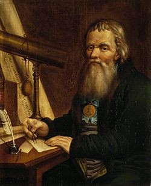

Иван Петрович Кулибин

Иван Петрович Кулибин (10 апреля 1735 года - 30 июля 1818 года) - русский механик-изобретатель из мещан, прозванный «нижегородским Архимедом». Заведующий механической мастерской Петербургской академии наук. Руководил производством станков, астрономических, физических и навигационных приборов и инструментов
Выдающийся русский механик, инженер и изобретатель, основоположник отечественной технологии производства оптического стекла, создатель новых мостовых конструкций «Кулибин» — так до сих пор называют талантливых мастеров-самоучек. И это не случайно. Вклад Ивана Петровича Кулибина в российскую и мировую науку столь значителен, что он по праву считается символом русского изобретательства. Он намного опередил свое время: создал механические устройства и предложил проекты, многие из которых были оценены лишь спустя столетие. Он был многогранно талантлив, оставил в наследие потомкам множество изобретений, полезных в разных сферах жизни. Иван Петрович Кулибин родился 10 апреля 1735 года по старому стилю в Нижнем Новгороде, в семье мелкого торговца мукой. Его отец был старообрядцем и воспитывал сына в строгости, с ранних лет приучая к труду. Иван освоил грамоту и счет у дьячка, а затем встал за прилавок, чтобы помогать отцу. Однако больше всего юношу увлекало чтение книг и создание разных игрушек — «флюгеров, толчей, меленок». Убедившись в исключительных способностях сына, Кулибин-старший позволил ему заниматься слесарным и токарным делом. После смерти отца 23-летний Иван Кулибин открывает в Нижнем Новгороде часовую мастерскую. И с тех пор, как он починил «замысловатый снаряд, показывающий делянки суток» губернатору Аршеневскому, пошла народная молва о необыкновенном умельце. Нижегородская знать, дворяне, помещики, купцы стали постоянными клиентами Кулибина. В 1767 году, во время поездки Екатерины II по волжским городам, представленный губернатором Иван Кулибин продемонстрировал государыне свои изобретения, а также рассказал о часах, которые замыслил смастерить в ее честь. Через два года он привез царице телескоп, микроскоп, электрическую машину и уникальные часы размером с гусиное яйцо, которые в полдень исполняли музыку, сочиненную Кулибиным в честь приезда императрицы Екатерины II в Нижний Новгород. Государыню поразил встроенный механизм театра-автомата: «В нем ежечасно растворялись маленькие царские двери, за которыми виднелся Гроб Господень, по сторонам двери стояли два воина с копьями. Отворялись двери златого чертога, и появлялся ангел. Камень, приваленный к двери, отваливался, дверь, ведущая в гроб, открывалась, стража падала ниц. Через полминуты появлялись жены-мироносицы, куранты играли три раза молитву «Христос Воскресе», и двери затворялись». Поднесенный императрице дар произвел на нее столь сильное впечатление, что она предложила талантливому мастеру возглавить механические мастерские Академии наук. Кулибин принял предложение. Так начался новый, самый яркий, этап в жизни и творчестве «нижегородского посадского, вельми прилежного до всякого сотворения премудростей диковинных». Однако часы оставались самой большой страстью «главного механикуса отечества», он создавал проекты разнообразных часовых механизмов от «часов в перстне» до башенных гигантов. Карманные «планетные» часы Кулибина, кроме указания на время, показывали месяцы, дни недели, времена года, фазы Луны. Изобретательство к этому времени стало неотъемлемой частью жизни Ивана Петровича. Одним из первых он обратил внимание на необходимость мостостроительства. В 70-х годах XVIII века Кулибин спроектировал первый однопролетный деревянный мост через реку Неву, а в конце 1776 года успешно прошли испытания 14-саженной модели этого моста. В 1779 году он сконструировал знаменитый фонарь-прожектор, который давал сильное освещение при слабом источнике, создал карманные электрофоры. С тех пор, как при помощи обыкновенных зеркал Кулибин осветил темные переходы Царскосельского дворца, он неизменно участвовал в оформлении различных карнавалов, празднеств, торжественных ассамблей, балов, устраивая всевозможные фейерверки, «световые шутихи», оптические забавы, аттракционы. В 1791 году Кулибин изобрел прототип современного велосипеда и легкового автомобиля: механическую повозку-самокатку, которая приводилась в действие при помощи махового колеса. Первый ножной протез, который сконструировал мастер, был изготовлен для офицера Непейцина, героя Очаковской битвы. Подъемное кресло — первый в мире лифт — стало одним из любимейших развлечений высших сановников и дворцовой челяди. Оптический телеграф, «водоход», машины для добычи соли, мельницы, водяное колесо, даже фортепиано и многое другое — вот многообразное наследие Ивана Петровича, который был награжден Екатериной II специальной именной золотой медалью на Андреевской ленте с надписью «Достойному. Академия наук — механику Ивану Кулибину». Гениальный изобретатель, конструктор и ученый не только вызывал восхищение современников, но и оставил потомкам удивительные приборы и оригинальные научные догадки, не вполне еще оцененные. Как сказал великий математик Эйлер Ивану Кулибину: «Теперь Вам остается построить нам лестницу на небо». Геодезические, гидродинамические и акустические приборы, готовальни, астролябии, электрические банки, телескопы, подзорные трубы, микроскопы, солнечные и иные часы, барометры, термометры, ватерпасы, точные весы — таков далеко не полный перечень сделанного в мастерских под руководством Кулибина.